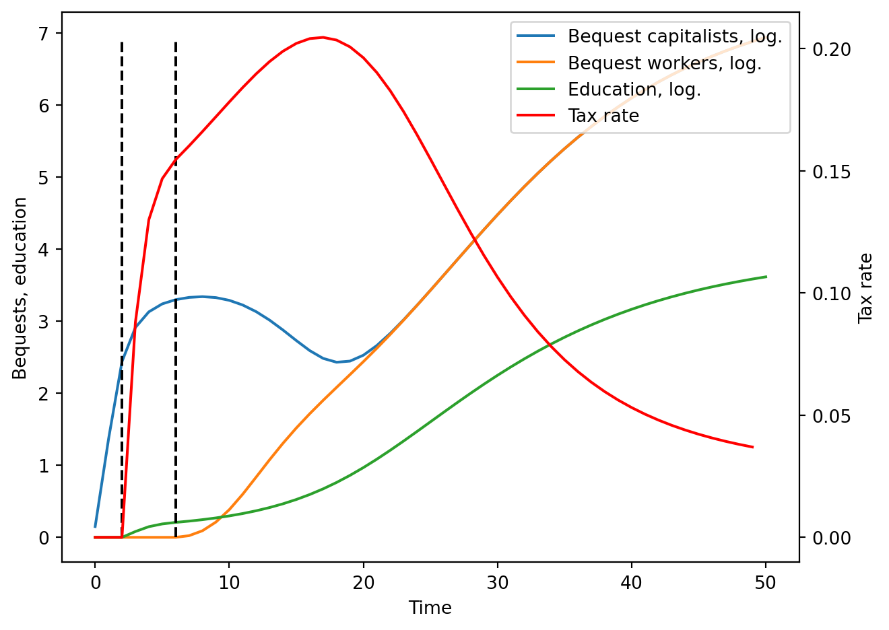
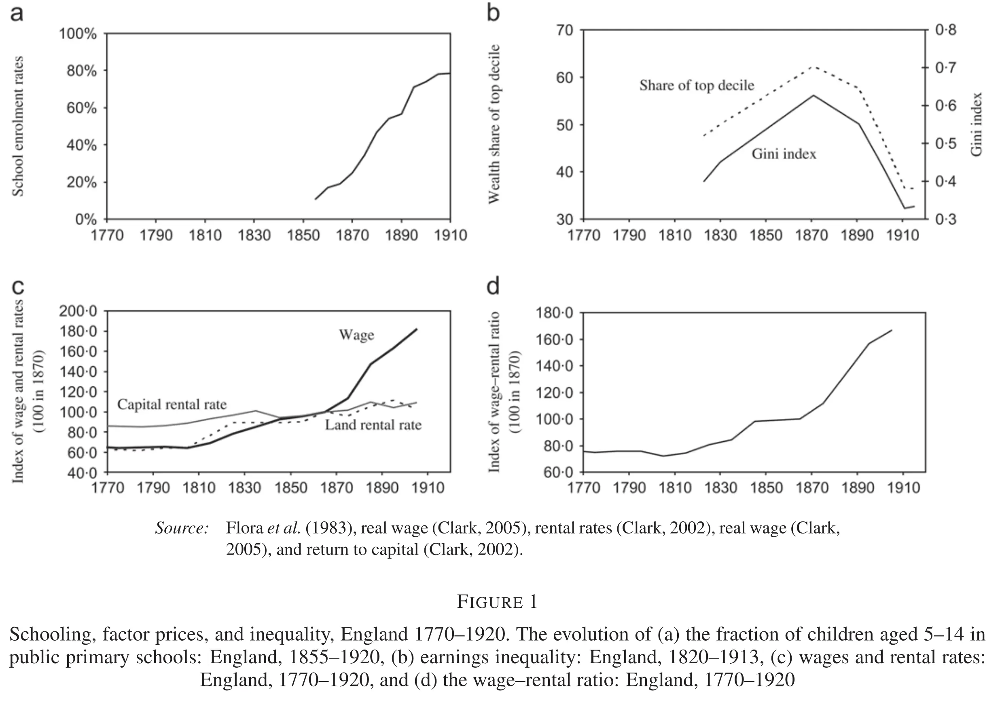

4 Galor and Moav (2006)
This section discusses the work of Galor and Moav (2006), which presents an OLG model to explain the rise of publicly financed education and the transition from a class structure characterised by capitalists and workers to another one where all individuals are capitalists.
The papers proposes that the demise of the class structure was a deliberate action from the part of the capitalists to sustain their profits as human capital became more and more important in the production process. This is, at some point in time, human capital becomes really necessary to produce, and the capitalists find it optimal to tax themselves to finance the education of workers. Doing so, raises the human capital level and allows them to keep their profits.
The paper is set-up after the industrial revolution, let’s say around 1850 and is meant to describe the transition of the modern economies between that time and the beginning of the 20th century. The authors motivate the paper by showing that during this time, school enrolment rates increased while, at the same time, inequality decreased: the demise of classes. The theory the authors propose parallels this evolution. Furthermore, they supplement the model with econometrics that are compatible with the predictions of the model.

4.1 The model
We present a simplified version of the model using precise functional forms for the human capital accumulation process and the production function. This paper comprises two separate sections: * The general model * The application of the model to a society with two classes. We will follow this approach.
For the moment, the economy comprises only one type of individuals. Individuals live for two periods of time: young and adult. Young individuals do not produce and use their time to acquire human capital. If education is provided, human capital accumulation is faster.
4.1.1 Production and prices
A single homogenous good is produced using physical and human capital according to a Cobb-Douglas production function. In particular:
\[ Y_t = F(H_t, K_t) = A K_t^\alpha H_t^{1-\alpha} = A k_t^\alpha,\quad k_t \equiv \frac{K_t}{H_t}. \]
Given the wage rate per efficiency unit of labour \(w_t\) and the return to capital \(r_t\), producers maximise profits by choosing the level of capital \(K_t\) and efficiency units of labour \(H_t,\) this is, \(\\{K_t, H_t\\} = \arg \max \left[A H_t k_t^\alpha - w_t H_t - r_t K_t\right].\) Considering perfect competition, the inverse demand for each factor is:
\[ r_t = f^\prime(k_t) = \alpha A k_t^{\alpha-1} = r(k_t), \] \[ w_t = f(k_t) - f^\prime(k_t)k_t = (1-\alpha)Ak_t^\alpha = w(k_t). \]
4.1.2 Individuals and preferences
Every period, a new generation of size 1 is born. Individuals have only parent and each has only one son. Individuals live for two periods: during their youth, they accumulate human capital; and education improves human capital accumulation. Young individuals may receive a positive bequest from their parents on which they earn interests (the bequest is physical capital that is lent to producers). When adults, they supply their human capital as efficiency units of labour; receive interests on their assets and allocate the total income between consumption and a bequest.
The bequest \(b_t\) is transferred from parents to children, and the government collects a tax \(\tau_t \geq 0\) on it. The remaining \(1-\tau_t\) is saved for future consumption. Physical capital fully depreciates between periods.
As mentioned, individuals accumulate human capital during their youth, and if they are provided with education (\(e_t\)), human capital accumulation is enhanced. However, even if no education is provided, all young individuals manage to obtain a minimum level of human capital: we set it equal to one. We model human capital accumulation as follows:1
\[ h_{t+1} = 1 + \frac{e_t}{1+e_t} = h(e_t). \]
This type of function ensures that under some conditions, investment in education is not optimal; while guaranteeing a minimum level of human capital.
When adults, individuals receive wages on their human capital, as well as the rental price on the bequest (the part not taxed by the government). Therefore, an individual with a bequest \(b_t\) and education level \(e_t\) has income equal to:
\[ I^i_{t+1} = w_{t+1}h(e_t) + (1-\tau)b^i_t R_{t+1}, \] and, since capital fully depreciates, \(R_{t+1} = r_{t+1} = r(k_{t+1}).\)
Lastly, the preferences of adults include consumption and a taste for giving bequests. Bequests in the model are a type of luxury good: only when income is large enough, \(b_t > 0.\) In particular: \[ u^i_t = (1-\beta) \log (c^i_{t+1}) + \beta \log (\bar{\theta} + b^i_{t+1}), \] where \(\bar{\theta} > 0\) and \(\beta \in (0,1).\) The budget constraint is simple: \[ c_{t+1}^i + b_{t+1}^i = I_{t+1}^i. \]
4.1.3 Optimisation
We can easily compute the value of bequests, as a function of the income level. Replacing \(c_{t+1}\) in the objective function and taking the derivative with respect to \(b_{t+1}\) yields:
\[ \frac{\partial}{\partial b^i_{t+1}} = 0 \implies \frac{1-\beta}{b^i_{t+1}-I^i_{t+1}}+\frac{\beta}{b^i_{t+1}+\bar{\theta}} = 0 \implies \] \[ b^i_{t+1} = \begin{cases} \beta (I^i_{t+1} - \theta) & \mathrm{if\quad} I^i_{t+1} > \theta \\ 0 & \mathrm{if\quad} I^i_{t+1} \leq \theta \end{cases} \]
where \(\theta \equiv \bar{\theta}\frac{1-\beta}{\beta}.\) Hence, when income is relative low, individuals do not give bequests.
4.1.4 Evolution of physical and human capital
Remember that bequests left during period \(t\) are the capital of period \(t+1.\) If \(B_t\) is the total amount of bequests left during \(t\), then \[ K_{t+1} = (1-\tau) B_t. \]
The remaining \(\tau B_t\) goes to the government, which uses it to fund education. Population is normalised to 1, therefore, each individual receives education equal to: \(e_t = \tau B_t,\) and human capital evolves as:
\[ H_{t+1} = h(e_t) = h(\tau_t B_t) = 1 + \frac{\tau_t B_t}{1 + \tau_t B_t}. \]
Last, the level of \(k_t = \frac{K_t}{H_t}\) is:
\[ k_{t+1} = \frac{K_{t+1}}{H_{t+1}} = \frac{(1-\tau_t)B_t}{h(\tau_t B_t)} = \frac{(1-\tau_t)B_t}{ 1 + \frac{\tau_t B_t}{1 + \tau_t B_t}}= k(\tau_t, B_t). \]
4.2 Optimal level of taxation
The paper assumes that the government selects the tax rate that maximises individuals’ utility. One important feature of the model is that utility is increasing in income \(I^i_{t+1}\). We can easily check this by rewriting the indirect utility: \[ \begin{aligned} & u^i_{t} = (1-\beta) \log (c^i_{t+1}) + \beta \log (\bar{\theta} +b^i_{t+1}) = \\ & = \begin{cases} (1-\beta) \log (I^i_{t+1} - \beta I^i_{t+1} + \beta \theta) + \beta \log (\beta I^i_{t+1} - \beta \theta) & \mathrm{if \quad} I^i_{t+1} > \theta \\ (1-\beta) \log (I^i_{t+1}) + \beta \log (\bar{\theta}) & \mathrm{if \quad} I^i_{t+1} \leq \theta \end{cases} \end{aligned} \]
which is increasing in \(I^i_{t+1}\) because \(\beta \in (0,1).\)
Therefore, instead of maximising the indirect utility, the government can maximise second-period income \(I^i_{t+1}\), which in turn will maximise utility. Second-period income is: \(w_{t+1}h(\tau^i_t B_t) + (1-\tau^i_t)b^i_tR_{t+1}\) where \(w_{t+1} = w(k_{t+1}\) and \(R_{t+1} = R(k_{t+1}.\) At the same time, \(k_{t+1} = \frac{(1-\tau_t)B_t}{h(\tau_t B_t)} = \frac{(1-\tau_t)B_t}{1+\frac{\tau_t B_t}{1 + \tau_t B_t}}.\) Putting everything together,
\[ \begin{aligned} \tau^i_t & = \arg \max w_{t+1}h(\tau^i_t B_t) + (1-\tau^i_t)b^i_tR_{t+1} \\ & = \arg \max (1-\tau^i_t)^\alpha h(\tau^i_t B_t)^{1-\alpha}B_t^\alpha\left(1-\alpha + \alpha \frac{b_t^i}{B_t}\right) \end{aligned}. \]
Maximising with respect to \(\tau^i_t\) yields:
\[ \begin{aligned} \frac{\partial}{\partial \tau^i_t} = 0 \implies & \\ & B_t^\alpha \left(1-\alpha + \alpha \frac{b_t^i}{B_t}\right)\left[ \alpha (1-\tau^i_t)^{\alpha-1}h(\tau^i_t B_t)^{1-\alpha}(-1)+ \right. \\ & \left. + (1-\alpha)h^\prime(\tau^i_t B_t)h(\tau^i_t B_t)^{-\alpha}B_t(1-\tau^i_t)^\alpha\right] = 0 \\ & \\ & \alpha (1-\tau)^{\alpha-1}h(\tau^i_t B_t)^{1-\alpha} = \\ & =(1-\alpha)h^\prime(\tau^i_t B_t) B_t (1-\tau)^\alpha h(\tau^i_t B_t)^\alpha \\ & \\ & \alpha (1-\tau)^{\alpha-1}h(\tau^i_t B_t)^{1-\alpha}B_t^{\alpha-1} = \\ & =(1-\alpha)h^\prime(\tau^i_t B_t) B^\alpha_t (1-\tau)^\alpha h(\tau^i_t B_t)^\alpha \\ & \\ & \underbrace{\alpha (1-\tau)^{\alpha-1}h(\tau^i_t B_t)^{1-\alpha}B_t^{\alpha-1}}_{R(k_{1+1})} = \\ & =\underbrace{(1-\alpha)B^\alpha_t (1-\tau)^\alpha h(\tau^i_t B_t)^\alpha}_{w(k_{t+1})} h^\prime(\tau^i_t B_t) \\ & \\ & R(k_{t+1}) = w(k_{t+1}) h^\prime(\tau^i_t B_t) \end{aligned} \]
The optimal condition for \(\tau^i_t\) does not involve the bequest received \(b^i_t\). Consequently, everybody will agree on the optimality of the tax rate and it will be implemented. In our case, substituting and solving for \(\tau_t\):
\[ \tau_t = \begin{cases} \frac{-B_t(1+2\alpha) + \sqrt{B_t^2(1+4(1+2B_t)(1-\alpha)\alpha)}}{4B^2_t \alpha} & \mathrm{if}\quad B_t > \frac{\alpha}{1-\alpha} \\ 0 & \mathrm{if\quad} B_t \leq \frac{\alpha}{1-\alpha} \end{cases} = \tau(B_t) \]
Alternatively, it is possible to re-express the condition for positive taxation in terms of \(k_{t+1}:\)
\[ \tau_t = \begin{cases} \frac{-B_t(1+2\alpha) + \sqrt{B_t^2(1+4(1+2B_t)(1-\alpha)\alpha)}}{4B^2_t \alpha} & \mathrm{if}\quad k_{t+1} > \frac{\alpha}{1-\alpha} \\ 0 & \mathrm{if\quad} k_{t+1} \leq \frac{\alpha}{1-\alpha} \end{cases} = \tau(B_t) \]
4.3 One economy, two groups
We suppose now that the economy, at time \(t=0\), consists of two groups: capitalists (C) and workers (W). The share that capitalists represent is denoted by \(\lambda_t.\) However, since all individuals always have one child, shares remain constant, this is, \(\lambda_t = \lambda.\) The unique difference between the two groups is the initial endowment of capital: * Capitalists own the initial stock of capital (which we assume is sufficiently large as to be able to bequest). * Workers have no capital, and thus give no bequests.
Therefore, the total amount of bequests in a given period is:
\[ B_t = \lambda b_t^C + (1-\lambda)b_t^W. \]
The remainder of the model is the same as before, in particular,
\[ k_{t+1} = \frac{(1-\tau(B_t))B_t}{h(\tau(B_t)B_t)}. \]
Such an economy shifts from having to classes of people to only one, where everybody owns capital. The critical transition occurs because of, eventually, capitalists find it optimal to impose a tax on themselves to finance public education. With it, and as wages keep increasing, workers are eventually able to give bequests, thus becoming capitalists. Instead of detailing the exact process (check the reference), we will simulate the economy for a set of parameters.
In the paper, it is assumed that: * \(h_{t+1}(0) = 1,\) * \(h^\prime_{t+1}(0) = \gamma < \infty,\) * \(\lim_{e_t \rightarrow \infty}h^\prime_{t+1}(e_t) = 0.\)↩︎